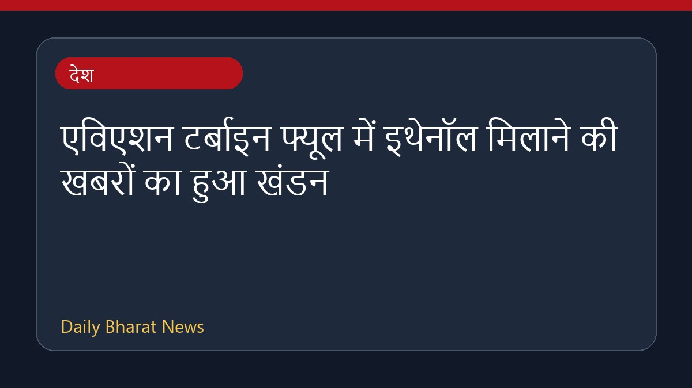

एविएशन टर्बाइन फ्यूल में इथेनॉल मिलाने की खबरों का हुआ खंडन

नागरिक उड्डयन मंत्री राममोहन नायडू ने विमान ईंधन में इथेनॉल मिलाने की चल रही अफवाहों का कड़ाई से खंडन किया है। उन्होंने स्पष्ट किया कि आसमान में ई20 या विमानन ईंधन में इथेनॉल के सम्मिश्रण को लेकर सरकार की ऐसी कोई भी योजना या प्रस्ताव विचाराधीन नहीं है। इससे पहले, आम आदमी पार्टी के नेता अरविंद केजरीवाल ने केंद्र पर डीजल और एटीएफ में इथेनॉल मिलाने की योजना का आरोप लगाया था, जिसके बाद मंत्री की ओर से यह आधिकारिक प्रतिक्रिया सामने आई है।
मूल स्रोत: India News Sources
E20 in the sky? Definitely not, says Civil Aviation Minister Naidu, denies rumours of ethanol blend with ATF - Deccan Herald ↗
E20 in the sky? Definitely not, says Civil Aviation Minister Naidu, denies rumours of ethanol blend with ATF - Deccan Herald ↗